Membangun generasi berkarakter, berkompetensi, unggul, dan berjiwa entrepreneur melalui pendidikan teknologi yang kreatif dan relevan.
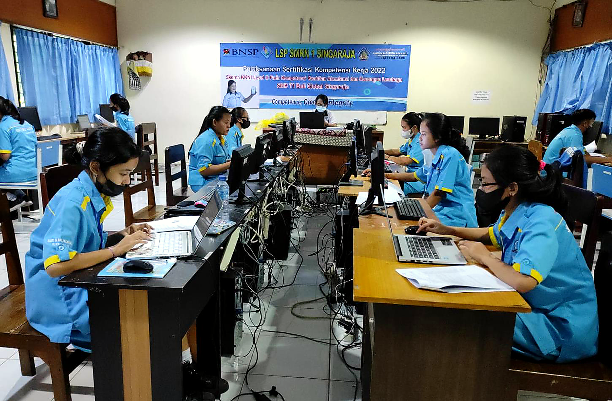
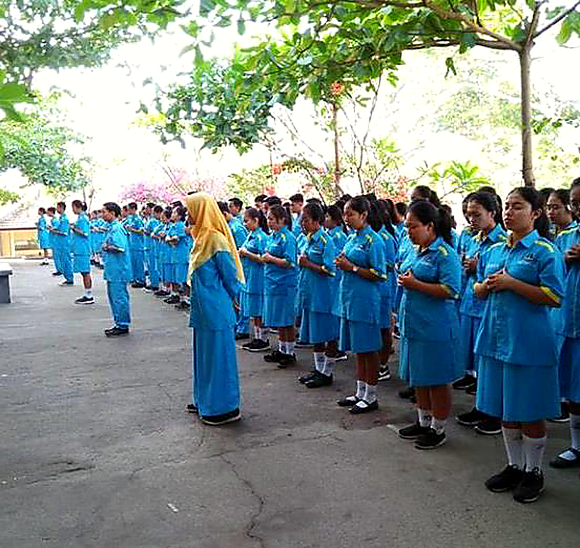
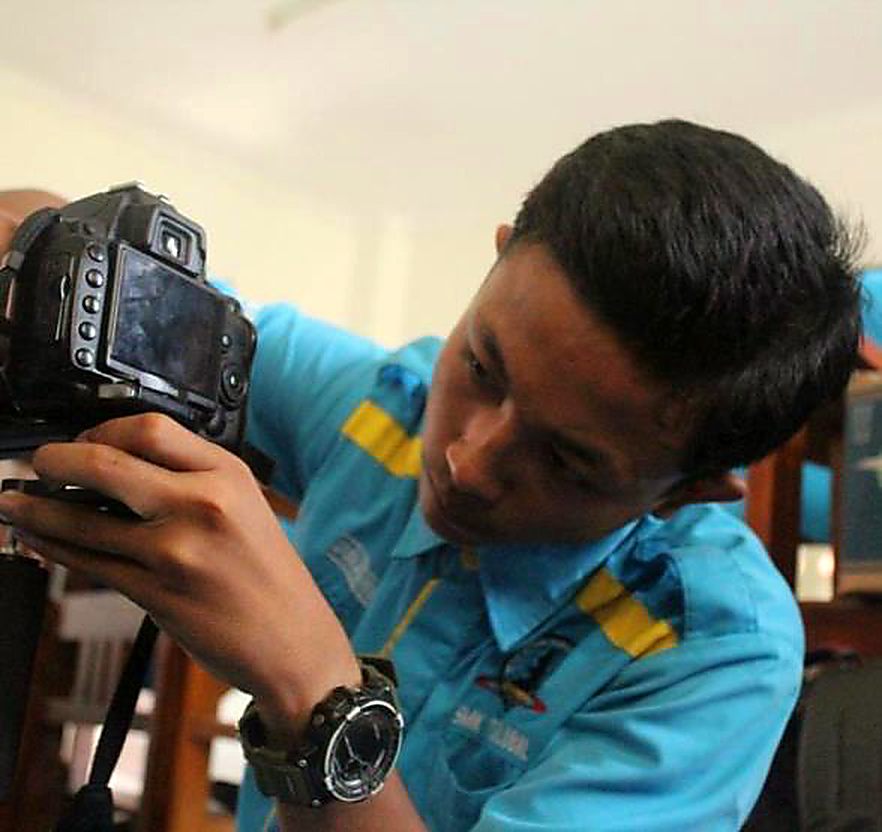
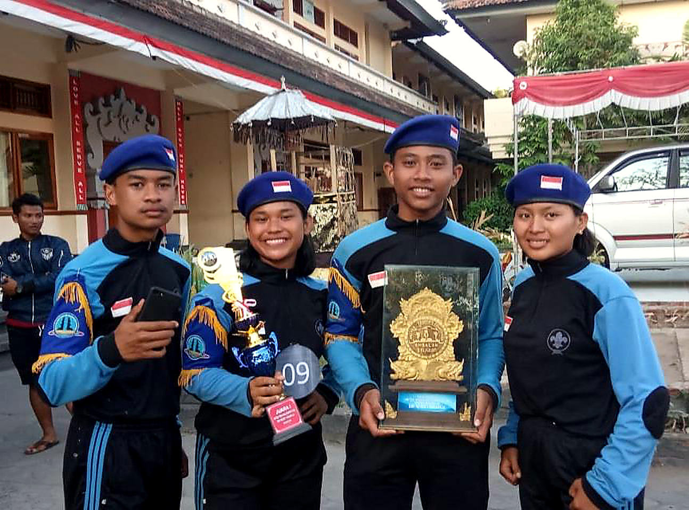
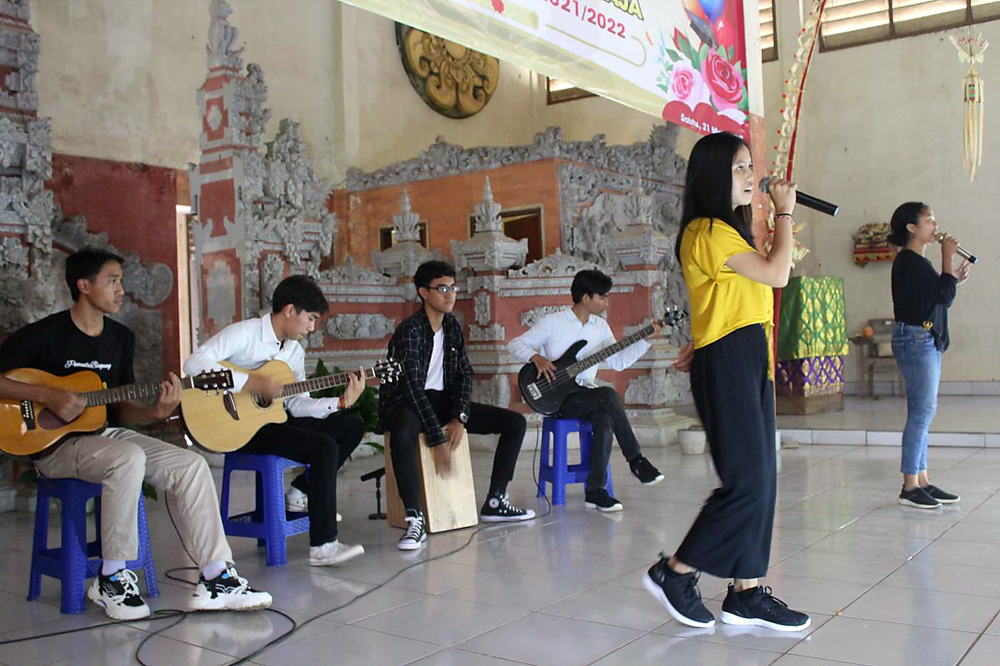
SMK TI Bali Global Singaraja adalah lembaga pendidikan yang berdedikasi mengembangkan potensi siswa dalam bidang teknologi informasi. Berlokasi di Banyuning, dengan lingkungan hijau yang nyaman, kami membentuk lulusan terampil, kreatif, bertanggung jawab, dan siap menghadapi tantangan masa depan.
Pembelajaran berorientasi pada kompetensi, pengalaman praktik, kreativitas, dan kesiapan memasuki dunia kerja maupun berwirausaha.
IT support, perangkat komputer, dan infrastruktur jaringan.
Desain grafis, fotografi, videografi, dan konten kreatif.
Pengembangan aplikasi, website, dan solusi digital.
Administrasi keuangan, pengelolaan usaha, dan bisnis.
Lingkungan belajar hijau dan nyaman, ruang kelas, laboratorium komputer ber-AC, aula, internet fiber optic, perpustakaan, serta fasilitas olahraga untuk mendukung pengalaman belajar yang menyeluruh.
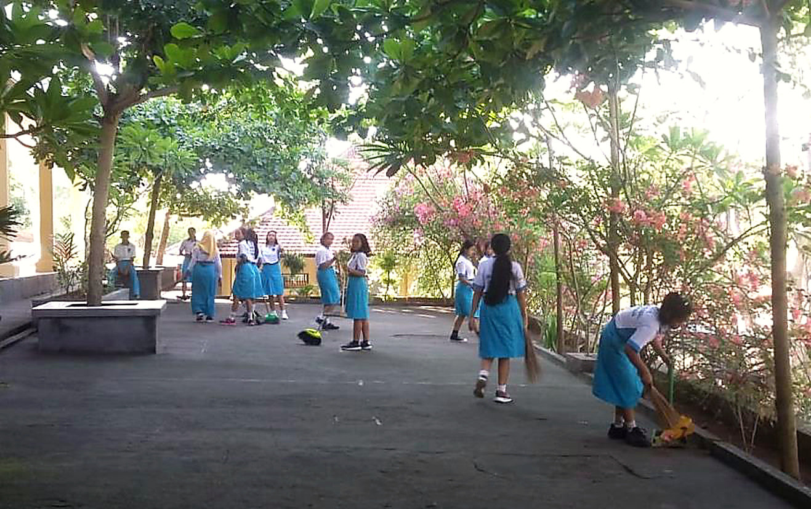
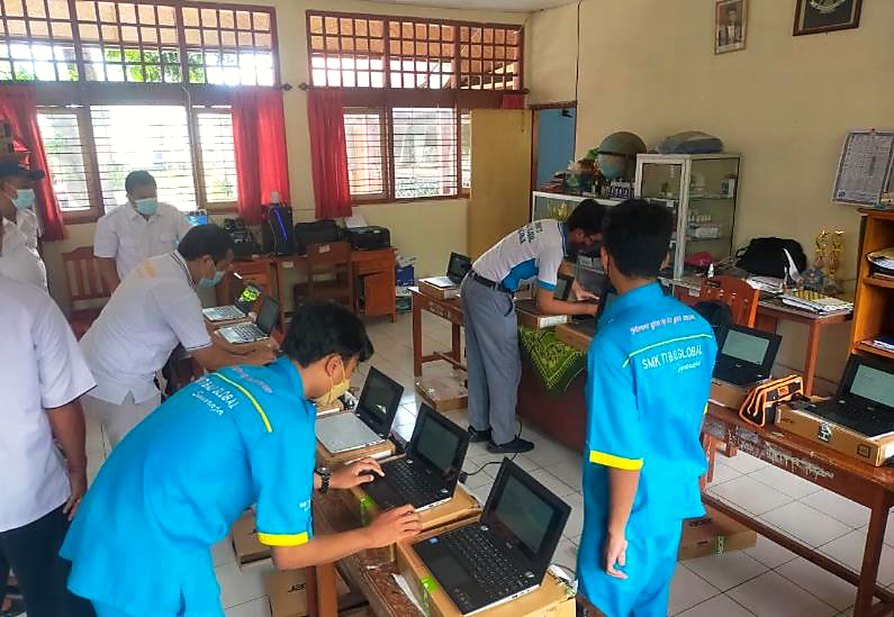
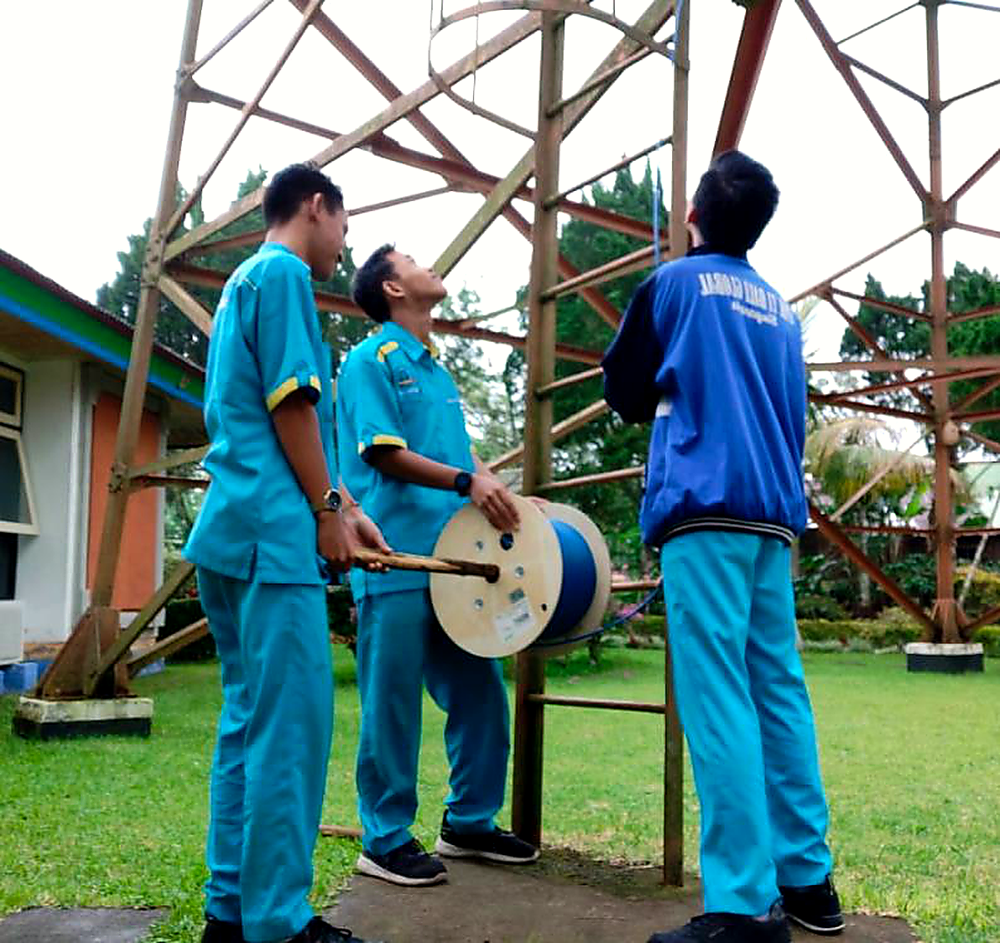
Siswa mengembangkan minat dan bakat melalui kegiatan ekstrakurikuler, kompetisi, seni budaya, olahraga, serta proyek nyata bersama unit usaha sekolah.
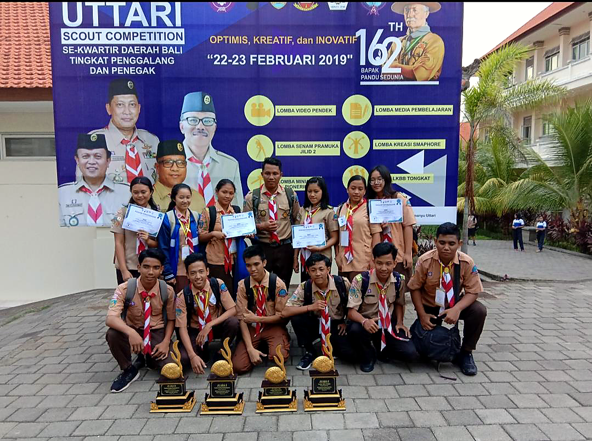
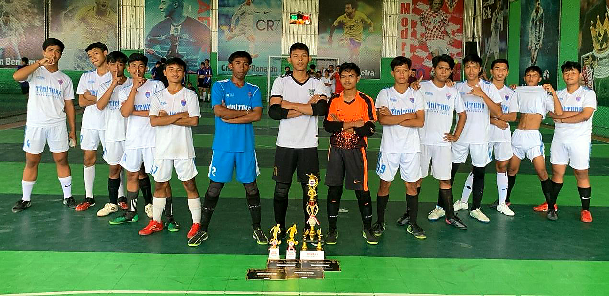
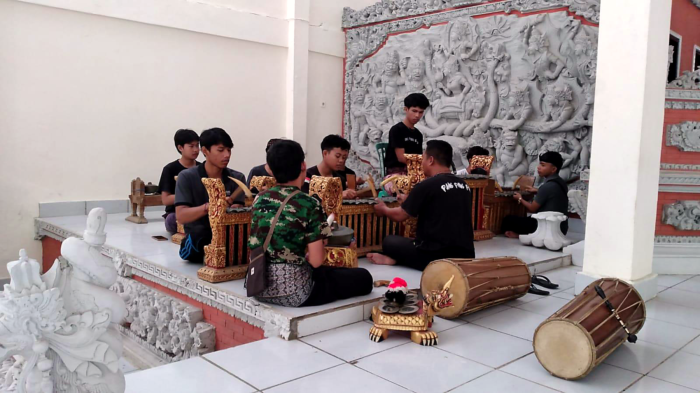
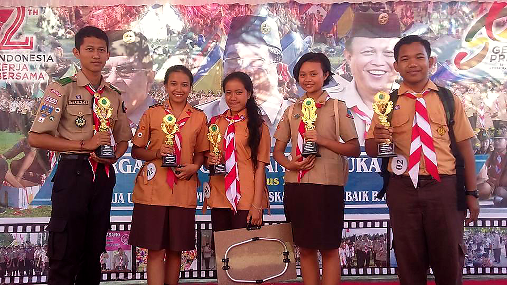
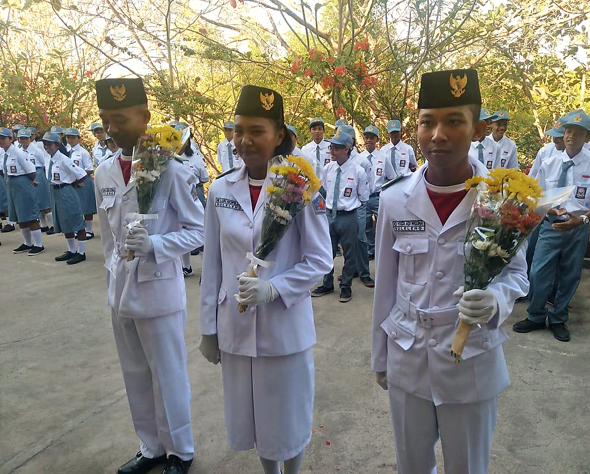